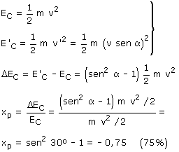

|
b) En un choque oblicuo se conserva la velocidad paralela a la superficie (vx) y se pierde parte de la velocidad normal a la superficie. Como mucho se perderá toda la velocidad normal a la superficie y la velocidad tras el choque será la paralela a la superficie: v' = v·sen α Veamos entonces la energía cinética perdida:  |